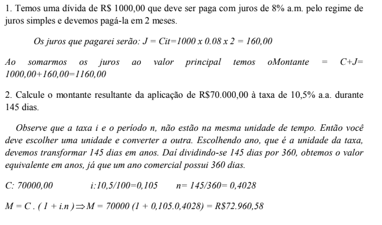
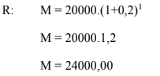
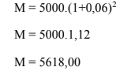

Capítulo 5
A MATEMÁTICA FINANCEIRA E OS INVESTIMENTOS DO SETOR INDUSTRIAL
CONTEXTUALIZANDO"A taxa de juros é um fator primordial para os investimentos, assim como a disponibilidade de crédito. ... O mundo está começando a trabalhar com incentivos monetários, e o custo de crédito no Brasil não pode ser impeditivo de um crescimento maior", (fala do presidente da Associação Brasileira da Indústria Têxtil e de Confecção). Para o presidente- executivo da entidade que representa a indústria química, a redução na taxa de juros é mais um fator positivo dentro de um cenário de medidas que o governo tem promovido para estimular a retomada dos investimentos pelo setor produtivo e crescimento da economia. “Mas a taxa de juros a 6% ainda é alta em relação a outros países e sozinha não é capaz de estimular as empresas do setor químico a retomarem os investimentos. A capacidade ociosa da indústria química brasileira atualmente é de 33% e antes de novos investimentos é preciso aumentar o uso da capacidade já instalada. Para isto, a retomada do consumo é absolutamente essencial e a queda da taxa de juros é uma medida importante para esse objetivo"
Dada a importância das taxas de juros para os investimentos do setor industrial, o que é importante saber a respeito desse tema?Caro aluno! Dada a importância dos conhecimentos de Matemática Financeira, para a nossa vida e para a economia de um modo geral, nesse capítulo, você vai estudar o que é e como se calculam juros simples e compostos
(RE)CONSTRUINDO CONHEMENTOSMATEMÁTICA FINANCEIRA – OS JUROS
Suponhamos que uma pessoa deseje comprar um bem qualquer e não disponha de dinheiro suficiente para pagamento à vista. Nestas condições, ela pode efetuar a compra a prazo ou tentar um empréstimo (financiamento) em uma instituição financeira. Em qualquer um dos casos, a pessoa geralmente paga uma quantia a título de juros. A cobrança desses juros é justificada como “aluguel” do dinheiro emprestado e é calculada a partir do prazo acertado para o pagamento e da taxa de juros combinada. Há muitas outras situações em que aparecem juros: por exemplo, se uma pessoa dispõe de alguma importância e pode aplicá-la em uma caderneta de poupança ou em algum outro investimento. Ao fim de certo período, ela receberá do banco a importância aplicada, acrescida de um valor referente aos juros da aplicação. Assim, quando se realiza alguma operação desse tipo, fica estabelecida uma taxa de juros (x por cento) por um período (dia, mês, ano), a qual incide sobre o valor da transação, que é chamado de capital. Os juros podem ser simples ou compostos
JUROS SIMPLESLeia o problema a seguir para aprender sobre o que é e como se calculam os juros simples.
“Maria gostaria de comprar uma roupa nova para ir a uma festa, mas não disponibilizava de recursos financeiros. Então, sua amiga Joana, muito esperta, ofereceu-se para emprestar uma quantia em dinheiro para Maria comprar a roupa. Joana estabeleceu uma condição para fazer o empréstimo, disse que Maria teria que pagar uma espécie de aluguel pelo dinheiro. Maria, como queria muito ir à festa, aceitou a condição sem pensar muito.”
Quando Joana se ofereceu para emprestar o dinheiro a Maria, na verdade ela está oferecendo um empréstimo a sua amiga. A quantia inicial que Joana emprestou para Maria fazer a compra chama-se Capital, em matemática financeira.
O aluguel a que Joana se refere como condição, recebe o nome de Juro e pode ser entendido como o custo do dinheiro emprestado.
Quando Maria for pagar Joana, ela terá que pagar a quantia pega emprestada (capital) mais o aluguel (juro), essa quantia resultante é chamada de Montante.
- Capital ou principal: é a quantia inicialmente disponível para uma transação econômica, é um bem econômico capaz de ser aplicado para se obter nova produção.
- Juro(J): lucro, calculado sobre determinada taxa, de dinheiro emprestado ou de capital empregado.
- Montante (M): corresponde à soma de um capital e seu juro.
- Taxa percentual(i): representa o juro de 100 unidades de capital de num período determinado como unidade de tempo.
- Os juros são simples quando não se soma ao capital para o cálculo de novos juros nos períodos seguintes. O regime de juros será simples quando o percentual de juros incidir apenas sobre o valor do capital.
Calculam-se Juros Simples aplicando a fórmula: J= Cit
Para calcular os juros e resolver corretamente os problemas, deve-se ter atenção principalmente nas unidades de medida de tempo, pois, por exemplo, se a taxa for anual o período de tempo também tem que ser anual, se for mensal, o período de tempo deve ser mensal e, por fim, se for diário o período também terá que ser.
Cálculo do Montante: M= C+J ou M= C+ Cit => M= C. (1 + i.n)
Alguns exemplos resolvidos:
 JUROS COMPOSTOSLeia o problema a seguir e acompanhe sua resolução para aprender sobre o que é e como se calculam os juros compostos, comparando-os com o cálculo de Juros compostos simples.
Um capital de R$ 200,00 foi aplicado á taxa de 2% ao mês, durante 5 meses. Qual foi o montante no fim dos 5 meses?
- Calculando com o sistema de juros simples:
Mês 1: j=cit = 200.0,02.1= 4
Mês 2: j=cit = 200.0,02.1= 4
Mês 3: j=cit = 200.0,02.1= 4
Mês 4: j=cit = 200.0,02.1= 4
Mês 5: j=cit = 200.0,02.1= 4
Total: J=Cit= 20
Sistema de juros compostos:
Mês 1: j=cit = 200.0,02.1= 4 => M=204,00
Mês 2: j=cit = 204.0,02.1= 4,08 => M=208,08
Mês 3: j=cit = 208,08.0,02.1= 4,16 => M=212,24
Mês 4: j=cit = 212,24.0,02.1= 4,24 => M=216,48
Mês 5: j=cit = 216,48.0,02.1= 4,33 => M= 220,81
Os Juros são compostos são aqueles em que se soma ao capital os juros de cada período para o cálculo de novos juros nos períodos seguintes.
O regime de juros compostos é o mais comum no sistema financeiro e, portanto, o mais útil para cálculos de problemas do dia-a-dia.
Fórmula para o cálculo do Montante: M = C(1 + i)n
Cálculo dos Juros: J= M-C
Acompanhe alguns exemplos resolvidos
1. Qual será o montante produzido pelo capital de R$ 20000,00, aplicado a juros compostos, á taxa de 20% ao ano, durante 12 meses?
2. Calcule o montante produzido por R$ 5000,00, aplicado á taxa de 6% ao bimestre, após quatro meses, no sistema de juros compostos.
1. Uma pessoa empresta a outra, a juros simples, uma quantia de R$ 2000,00, pelo prazo de quatro meses, à taxa de 3% ao mês. Quanto deverá ser pago de juros?
2. Um capital de R$ 5.000,00 é aplicado a juros simples. Calcule os juros correspondentes, quando:
a) Taxa: 4% a.m - prazo: 8 meses.
b) Taxa: 30% a.a - prazo: 10 anos.
c) Taxa: 3% a.m - prazo: 45 dias.
d) Taxa: 0,2% a.d - prazo: 5 meses.
3. Um capital de R$ 800,00, aplicado com juros simples com uma taxa de juros simples de 2% ao mês, resultou no montante de R$ 880,00 após certo tempo. Qual foi o tempo de aplicação?
4. Em 1°/03/2008 uma pessoa emprestou a quantia de R$ 4000,00, a juros simples, com a taxa de 4% ao mês. Qual era o montante da dívida em 1°/07/2008?
5. Se uma mercadoria cujo preço é de R$ 200,00 for paga em 6 meses, com taxa de 20% ao ano, quanto será pago de juros, no sistema de juros simples?
6. Quanto receberá de juros, no fim de um trimestre, uma pessoa que investiu, a juros compostos, a quantia de R$ 6000,00, á taxa de 1% ao mês?
7. João abriu uma poupança no Banco no dia 07/06/2008 e no mesmo dia depositou R$ 1.000,00. Sabendo que o rendimento da poupança é de 5% ao mês. Qual será o valor que João terá na sua conta 5 meses depois?
O QUE APRENDINesse capítulo, resolvendo problemas, aprendi a calcular juros simples e compostos, compreendendo a diferença entre eles e quais as vantagens e desvantagens em aplicar um ou outro.
1. R: 2000.0,03.4 = 240,00
2.a) R: 5000.0,04.8 = 1600,00
b)R: 5000.0,30.10 = 15000,00
c) R: 5000.0,03.1,5 = 225,00
d) R: 5000.0,002.150 = 1500,00
3. R: 5 meses
4. R: J=640,00M= 4640,00
5. R:J=20,00
6. M = 6181,80 J = 181,80
7. M = 1270,00